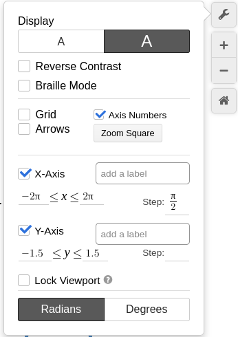
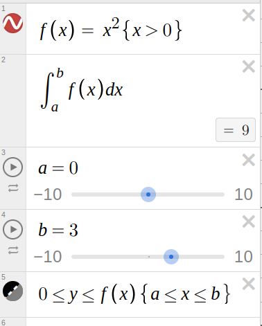

6 Desmos useful techniques
Here are some useful techniques when using Desmos.
6.1 Removing clutter
By selecting a few options in Desmos you can create really nice looking diagrams.
6.1.1 \(y = sin(x)\) with no formating
This is was made by just entering the equation \(y = sin(x)\) into Desmos, saving it and copying the link https://www.desmos.com/calculator/qq0fjs6jvd.
6.1.2 \(y = sin(x)\) with formating
To get this use the embed link https://www.desmos.com/calculator/usu3h5pyis?embed and the options shown below.
To limit the domain of the function we write. \(y = sin(x) {-2\pi \le x \le 2\pi}\) which can be obtained by typing y=sin(x){2pi<=x<=2pi} into the Desmos graphing calculator.
To streamline the look of the diagram the following options were used.
- large font
- deselect grid
- change x axis limits
- change y axis limits
You can get these by clicking on the spanner in the top right hand corner.

6.2 Showing areas under graphs
The following equations were used to make this.
- \(f(x) = x^2 { x > 0}\) by typing
f(x) = x^2 {x > 0} - \(\int_a^b f(x) dx\) by typing
int f(x) dxand addingaandbto the limit boxes and selecting add sliders to all. - To shade the region under the graph add \(0 \le y \le f(x) {a \le x \le b}\) by typing
0 <= y <= f(x) {a <= x <= b}
You can then change the sliders to change the shaded area. Desmos even computes the value of the integral.
This is what the list of equations looks like on Desmos.
